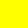

Цель крайне проста – дойти до финиша и преодолеть все препятствия по пути к нему.
Финишем является красная клетка в углу игрового поля.
· Управление фишкой происходит с помощью стрелочек на клавиатуре или WASD.
· Ходы игрок получает с помощью кубика. Для того чтобы кубик остановился, надо нажать пробел.
· В начале игры у вас всего 1 жизнь.
· Текущее количество ходов и жизней отображается над игровым полем.
· Игрок проигрывает, если жизни заканчиваются.
· Пройденный путь помечается голубым цветом.
· В игре есть особенные клетки: здоровье, капкан, телепорт и задание. (О них чуть позже)
· Уже пройденные специальные клетки больше не активируются. (Кроме клеток-заданий)
Если вы попали на эту клетку, то вы счастливчик! Вы получаете одну единицу здровья.
Если ваша фишка оказалась на этой клетке - это значит, что вы угодили прямиком в капкан! Увы, но вы теряете одну жизнь
Ваша фишка перемещается в случайную клетку поля. Кроме финиша конечно же)
Это самые интересные клетки. Попав на неё вам предстоит сыграть в мини-игру!
Но если вы провалите задание, то у вас опять заберут одну жизнь